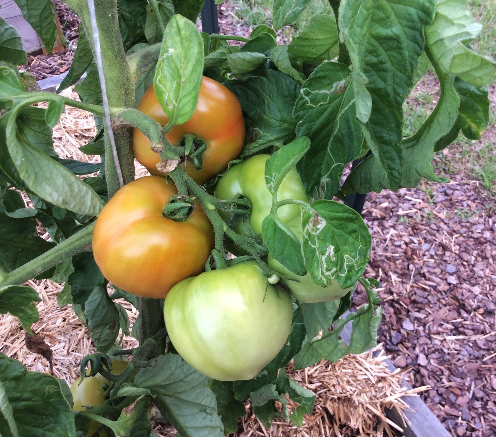
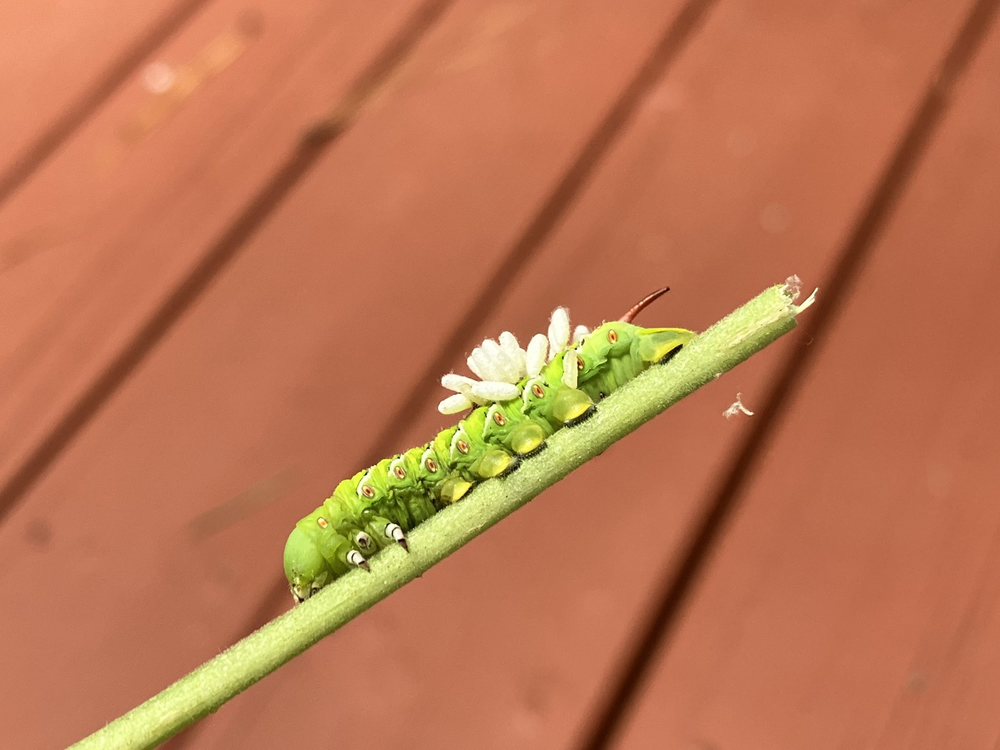
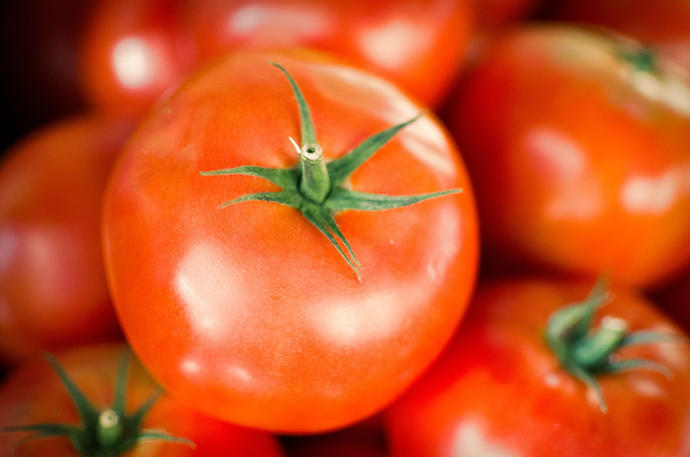

田間到餐桌 · 先認識它
番茄葉被啃了，
該拿哪一種工具？

放大照片 ↗番茄葉上出現缺口，可能是幼蟲啃食；葉片長出病斑，則可能與病原菌有關。田邊的雜草還可能和番茄爭奪光、水與養分。要保住收成，得先分清楚問題。農藥是用來防治這些有害生物的一類製劑，但用途不同，作用也不同。
農藥也包括調節植物生長的製劑，不全以殺死生物為目的。
本頁依據與延伸閱讀
臺灣農藥管理法第 5 條 ↗EPA：農藥類型 ↗NPIC：殺蟲劑 ↗殺真菌劑 ↗田間到餐桌 · 看一個具體例子
有些農藥，
來自細菌。
如果確認啃葉的是某些蛾蝶幼蟲，可以考慮用蘇力菌（Bt）製劑防治。這種細菌產生的特定蛋白，要被對它敏感的幼蟲吃進去，並遇上適合的腸道條件，才能發揮作用。
蘇力菌也有不同的類型，科學上稱為不同菌株。有些製劑主要對付蛾蝶幼蟲，有些針對蚊子幼蟲，不能任意互換。這種「對某些對象較有效」的特性，叫選擇性；它不等於對其他生物完全無害。
這裡談的是 Bt 農藥製劑，不是 Bt 基改作物；仍須考慮非目標昆蟲與製劑其他成分。
本頁依據與延伸閱讀
NPIC：Bt 的作用與限制 ↗田間到餐桌 · 效果之外
番茄田裡，
不只有害蟲。
選對害蟲還不夠：藥劑也可能接觸田裡幫忙控蟲的生物。這些天敵會捕食、寄生害蟲或使其致病；傷到牠們，可能削弱田間原有的防線。

放大照片 ↗幼蟲背上的白色小粒，是什麼？
看看這張在美國拍攝的照片：幼蟲背上的白色小粒不是卵，而是寄生蜂的繭。寄生蜂幼蟲曾在宿主體內發育，出來後結繭；牠們也是幫忙控制害蟲的天敵。
評估不能只看「殺蟲有效」。藥劑也可能經皮膚、呼吸或飲食接觸人或其他生物，稱為暴露；還要一起看毒性、接觸量，以及接觸多久、多常發生。
不同農藥的風險差異很大，不能只用「天然」或「人工合成」替代評估。
本頁依據與延伸閱讀
WHO：用途與不同暴露 ↗UC IPM：天敵與授粉昆蟲 ↗NPIC：毒性與暴露 ↗北卡州立大學：幼蟲與寄生蜂繭 ↗田間到餐桌 · 另一個長期代價
為什麼同樣的藥，
後來可能不靈了？
除了影響其他生物，反覆使用同一作用方式，還可能讓害蟲族群出現抗藥性：原本有效的藥，越來越難控制牠們。原先具有可遺傳耐受差異的個體更容易活下來，並把這種差異傳給後代。
處理後，較能耐受者的比例提高，這種差異也可能延續到後代。
○ 較敏感個體 ◆ 較能耐受個體
這是族群經過選擇的結果，不是每隻蟲都練出本領。病原菌和雜草也可能出現抗藥性；因此，一直加藥並不是長期解法。
點數與繁殖比例為教學示意，不是實測防治率，也不是施藥建議。
本頁依據與延伸閱讀
FAO：抗藥性管理 ↗田間到餐桌 · 不只換一瓶藥
防治害蟲，
不只靠農藥。
要兼顧收成、天敵與抗藥性，不能只靠換一瓶藥。先監測田裡的變化，再搭配栽培調整、防蟲網、保護天敵與必要的藥劑，這種做法叫整合性有害生物管理（IPM）。
這樣照顧番茄田，不是承諾零農藥，而是讓藥劑成為工具之一，而非唯一答案。
本頁依據與延伸閱讀
FAO：IPM 的整合思路 ↗UC IPM：監測與防治工具 ↗田間到餐桌 · 施用之後
噴上去以後，
農藥去了哪裡？
若最後仍需要施藥，工作並未到此結束。藥劑可能留在表面、被植物吸收，或隨雨水進入周圍環境。留在作物表面或內部的農藥及部分相關產物，稱為殘留；消退速度會隨成分、作物與天氣而變。
既然殘留需要時間消退，施藥後多久才能採收？藥劑標示上的安全採收期，就是最後一次施藥到採收必須間隔的時間。它以核准用法為前提，因此用量、次數等規定也要一起遵守。
遵守安全採收期，是讓殘留符合規定，不代表農藥歸零。自行增加用量後再多等幾天，也不能保證合規。
本頁依據與延伸閱讀
NPIC：環境中的分解 ↗NPIC：植物吸收與轉運 ↗NPIC：水中的移動 ↗農藥試驗所：安全採收期 ↗田間到餐桌 · 一路走到餐桌
留下多少，
和吃進多少，是兩件事。
到了採收時，怎麼判斷殘留是否合格？檢驗不一定只找農藥原本的成分，也可能包括部分在生物體內轉變（代謝）或分解後的產物，依各農藥的殘留定義而定。食物中的含量與人體吃進多少不同，後者還取決於吃的份量。
農藥殘留容許量（MRL）是依核准用法的田間殘留試驗，並經飲食暴露安全評估訂定的法規上限，不是超過一點就中毒的開關。超標仍須依法處理。
先核對檢出的是哪種農藥、用在哪種作物，再把含量與適用規定比較。單看「檢出」兩字，還不能判定合不合格。
合規管理與健康風險評估各有角色。不能把「不一定中毒」當成繼續販售不合格食品的理由。
本頁依據與延伸閱讀
食藥署：容許量與評估 ↗現行標準：未列項目與免訂例外 ↗WHO：劑量與暴露 ↗FAO：殘留定義 ↗田間到餐桌 · 最後，回到廚房
蔬果進了廚房，怎麼洗比較合適？
買菜時挑選可靠來源；回家後，清洗仍是必要的處理。用乾淨流動清水即可，不必特別加鹽、小蘇打或清潔劑。葉片間的縫隙、果實的蒂頭，則需要不同處理。

放大照片 ↗番茄、甜椒等果菜，先清洗後再去除蒂頭；表面不平整處可用軟毛刷輕刷沖洗。
清洗能降低部分殘留，但效果依農藥與蔬果而異，不能保證歸零。遇到召回，依產品與批次公告處理，不用「多洗幾次」取代退貨或其他處置。